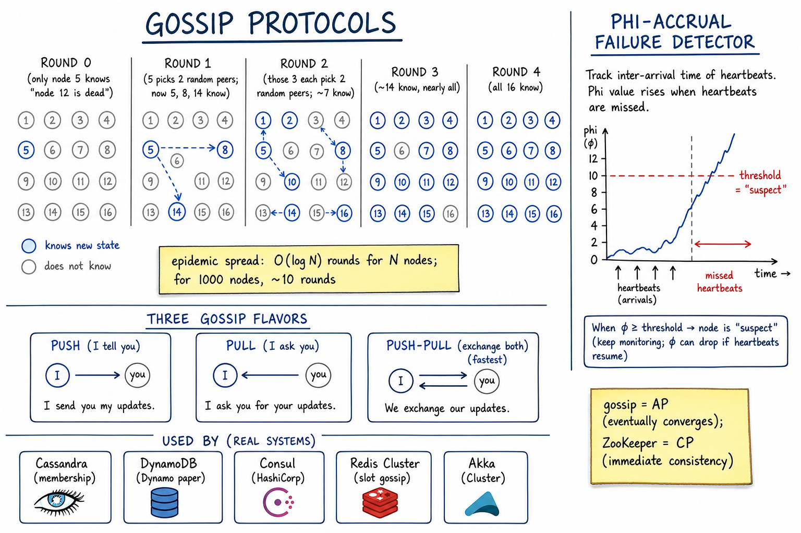

Gossip Protocols // Stretch
How thousands of nodes agree on cluster membership and failure detection without a central coordinator. Each node talks to a few random peers each tick; state converges in O(log N). Used by Cassandra, DynamoDB, Consul, Redis Cluster.

5 rounds of gossip showing O(log N) convergence in a 16-node cluster; three gossip flavors (push / pull / push-pull); phi-accrual failure detector graph; real systems using gossip.
01 — The Problem
Cluster membership + failure detection at scale. A 1000-node Cassandra cluster needs every node to know: which peers exist, which are alive, what tokens they own. A central coordinator (ZooKeeper) is a SPOF and bottleneck at this size. Gossip lets the cluster self-organise.
The trade-off: gossip converges eventually, not immediately. If you need strict consensus (only one leader, exactly-once metadata update), you need Raft/Paxos. If you need scalable best-effort dissemination, gossip wins.
02 — Core Vocabulary
| Term | Meaning |
|---|---|
| Gossip / Epidemic protocol | Each node periodically picks random peers and exchanges state. |
| Anti-entropy | Continuous reconciliation of state across replicas. |
| Rumor-mongering | Spread new hot info aggressively; stop once "seen" by enough nodes. |
| Membership view | The set of (node_id, address, status) each node knows about. |
| Heartbeat counter | Per-node integer that each node increments locally; spread by gossip. |
| Phi-accrual | Adaptive failure detector that outputs a suspicion value φ instead of binary alive/dead. |
| Suspect / Down | SWIM states: SUSPECT (not heard recently), DOWN (confirmed dead). |
| SWIM | Scalable Weakly-consistent Infection-style process group Membership protocol (Cornell paper). |
03 — Basic Algorithm
Each node N runs:
every T seconds (gossip interval, e.g. 1s):
peer = random_choice(membership_view)
send(peer, my_view) // PUSH
recv(peer, their_view) // PULL
my_view = merge(my_view, their_view)
merge():
for each entry (node_id, heartbeat, status):
keep version with HIGHER heartbeat counter
on tie: keep entry I had
When node joins:
contact 1+ "seed" node, get initial view
add self with status=UP, heartbeat=0
start gossiping
That's it. No leader, no central registry. As long as the gossip period is short relative to membership change rate, the cluster converges.
04 — Convergence Math
Question: how many rounds before information reaches all N nodes?
Model: each round, every informed node tells 1 random peer.
(push gossip)
After round r, expected fraction informed:
fraction(r+1) = fraction(r) * (2 - fraction(r)) (approximately)
Result:
rounds to inform half: ~ log2(N)
rounds to inform all (whp): ~ 1.5 * log2(N)
For N = 1000: ~15 rounds
For N = 1,000,000: ~30 rounds
At 1s gossip interval -> 15-30s for global convergence.
Logarithmic convergence is the magic. A million-node mesh converges in ~30 seconds. Better than O(N) broadcast for sure, and the network load per node is constant.
05 — Push / Pull / Push-Pull
| Flavor | How | Trade-off |
|---|---|---|
| Push | I send you my updates. You merge. | Good when info is fresh and spreading. Wastes bandwidth once everyone knows. |
| Pull | I ask you for your updates. | Good when info is stable; saves bandwidth. Slower start. |
| Push-Pull | We exchange both directions. | Fastest convergence. Standard for membership. |
Rumor-mongering optimisation: once you've gossiped a piece of info to "enough" peers who already knew it, mark it "cold" and stop spreading. Keeps gossip bandwidth bounded under steady-state.
06 — State vs Operation Gossip
| State gossip | Operation gossip | |
|---|---|---|
| What's exchanged | Current snapshot of node state | Operations / events |
| Conflict resolution | Compare version numbers, keep newer | Commutative merge (CRDT-like) |
| Used by | Cassandra, Consul, Redis Cluster | Riak, some CRDT systems |
| Best for | Membership, schema, token assignments | Counters, sets, distributed log |
Membership is naturally state-gossip: each entry is a (node_id, heartbeat, status) tuple with a version. Higher heartbeat wins.
07 — Failure Detection: Phi-Accrual
Naive: heartbeat with timeout if no heartbeat in 5s -> DEAD Problem: network blip = false positive; tuning T is impossible. Phi-accrual (Hayashibara et al., Cornell): -> track inter-arrival times of heartbeats -> model them as normal distribution -> φ(t) = -log10(P(observe gap ≥ t-last_hb | history)) φ rises continuously as time without heartbeat grows. Threshold (e.g. φ ≥ 8) -> SUSPECT Higher threshold (φ ≥ 12) -> DOWN Benefits: - Adapts to network conditions automatically - Continuous output (suspicion level) instead of binary - False positives drop dramatically vs fixed timeout - Used in Cassandra, Akka.
SWIM has a different scheme: direct ping → indirect ping (ask K other nodes to ping) → SUSPECT (gossiped) → DEAD if no refutation within window.
08 — Real Systems
| System | What gossip carries |
|---|---|
| Cassandra | Cluster membership, token ownership, schema versions, hints |
| DynamoDB / Dynamo paper | Membership, partition assignments (Dynamo style) |
| Consul | SWIM-based; service catalog and member health |
| Redis Cluster | Hash-slot ownership, primary/replica relationships, failover |
| Akka Cluster | Phi-accrual; node lifecycle states |
| HashiCorp Serf | SWIM library; underpins Consul + Nomad |
| CockroachDB | Gossip for node addresses, cluster settings, ranges metadata (range <= 64 KB) |
| Bitcoin | Gossip for transaction + block propagation |
09 — Gossip vs Centralized Coordination
| Gossip (AP) | ZooKeeper / etcd (CP) | |
|---|---|---|
| Consistency | Eventual | Linearizable |
| SPOF | None — truly decentralized | Quorum failure = unavailable |
| Scale | 1000s of nodes | ~5-7 voters; clients can be many |
| Latency | Seconds to converge | Milliseconds to commit |
| Best for | Membership, health, schema gossip, large meshes | Leader election, locks, config |
| Used by | Cassandra, Dynamo, Consul, Akka | Kafka (old), HBase, Vitess, K8s |
Real systems often combine: Consul uses gossip for membership/health + Raft for the K/V store. Cassandra is fully gossip (no ZK). Kafka migrated FROM ZK TO Raft (KRaft), not to gossip — metadata needs strong consistency.
10 — Where It Shows Up
| Reference | Angle |
|---|---|
| Cassandra / DynamoDB | Token ring + gossip for membership; AP design |
| Distributed Key-Value Store | Membership without a coordinator |
| ZooKeeper / etcd | The CP alternative |
| Redis Cluster | Gossips slot ownership |
| Failure Modes | Phi-accrual detection in context |
| Consistency Models | Gossip = AP corner of CAP |
11 — Pitfalls
- Gossip storms after a network partition heals — both sides flood updates. Use anti-entropy rate limits.
- Heartbeat counters overflow — 64-bit fine for centuries; 32-bit wraps.
- Clock skew breaking versions — use logical counters, not wall clocks (see Time).
- Stale "DOWN" entries linger — once marked down, gossip continues spreading the down record. Need TTL + tombstones (e.g., Cassandra's gossip generations).
- Seed-node SPOF on cold cluster bootstrap — multiple seeds, mDNS, or known DNS record.
- Gossip metadata in >64KB — CockroachDB caps gossiped values to keep round-trip small.
- Using gossip for strong-consistency data — eventual convergence = stale reads. Wrong tool.
- Phi threshold too low — flapping. Too high — slow detection. Tune.
12 — Interview Q&A
What is a gossip protocol?
Why O(log N) rounds for convergence?
What's the difference between gossip and ZooKeeper?
Walk me through phi-accrual failure detection.
How does gossip handle network partitions?
Push vs pull vs push-pull gossip?
What's SWIM?
Why does Cassandra use gossip but Kafka uses Raft/ZK?
How does gossip bandwidth scale?
What are the failure modes of gossip?
SDE-2 vs SDE-3 differentiator?
| SDE-2 | SDE-3 |
|---|---|
| "Gossip is how Cassandra finds peers" | + O(log N) convergence math, push/pull/push-pull trade-offs, phi-accrual vs fixed-timeout detection, SWIM indirect-ping mechanism, generations and tombstones for stale entries, when gossip is wrong (linearizable metadata), real-system breakdown (Cassandra vs Consul vs Redis Cluster vs CockroachDB) |